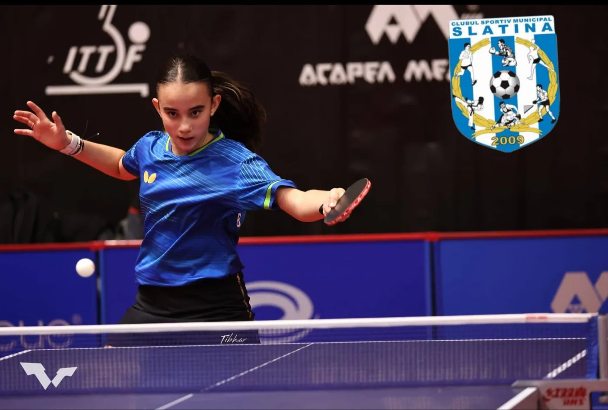
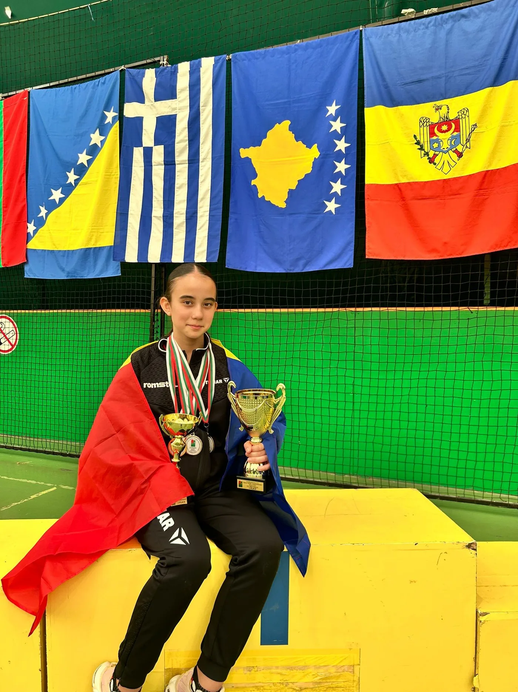
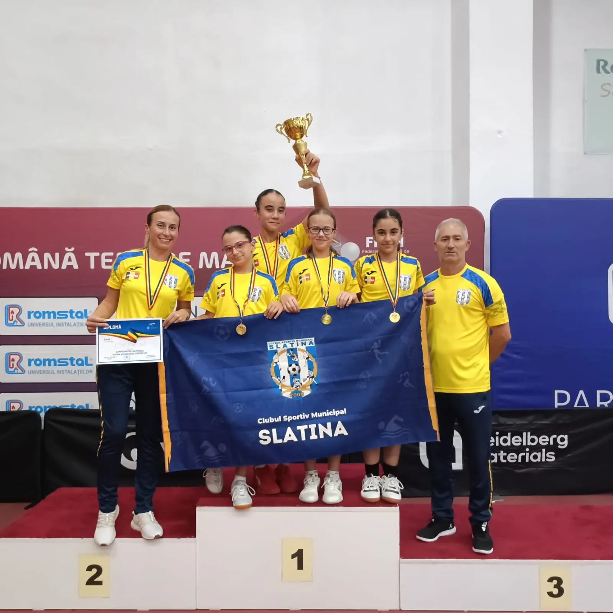
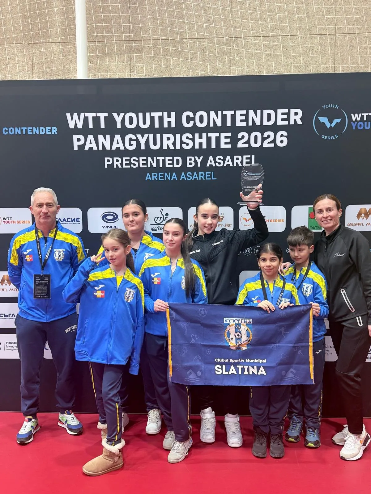
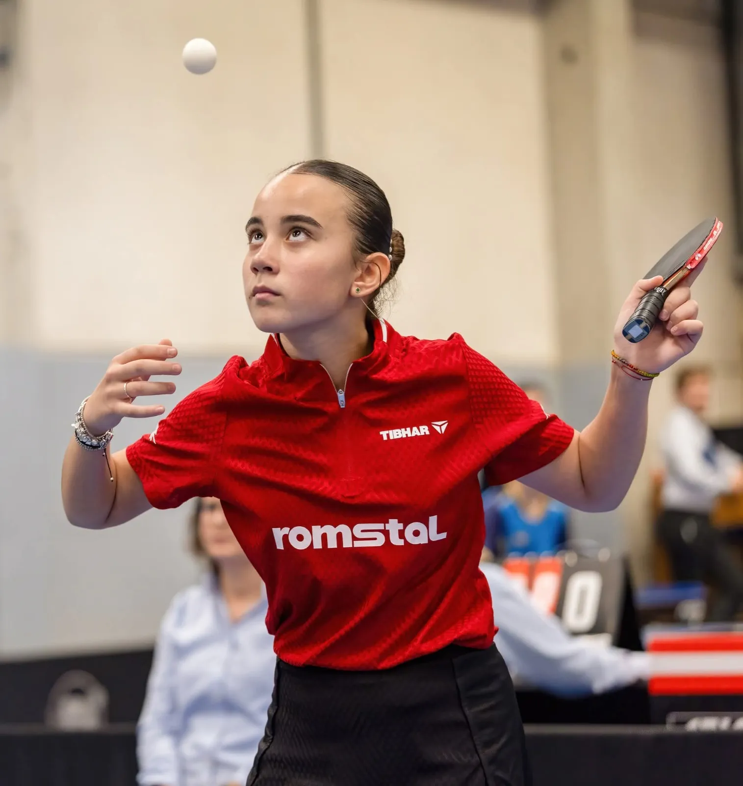
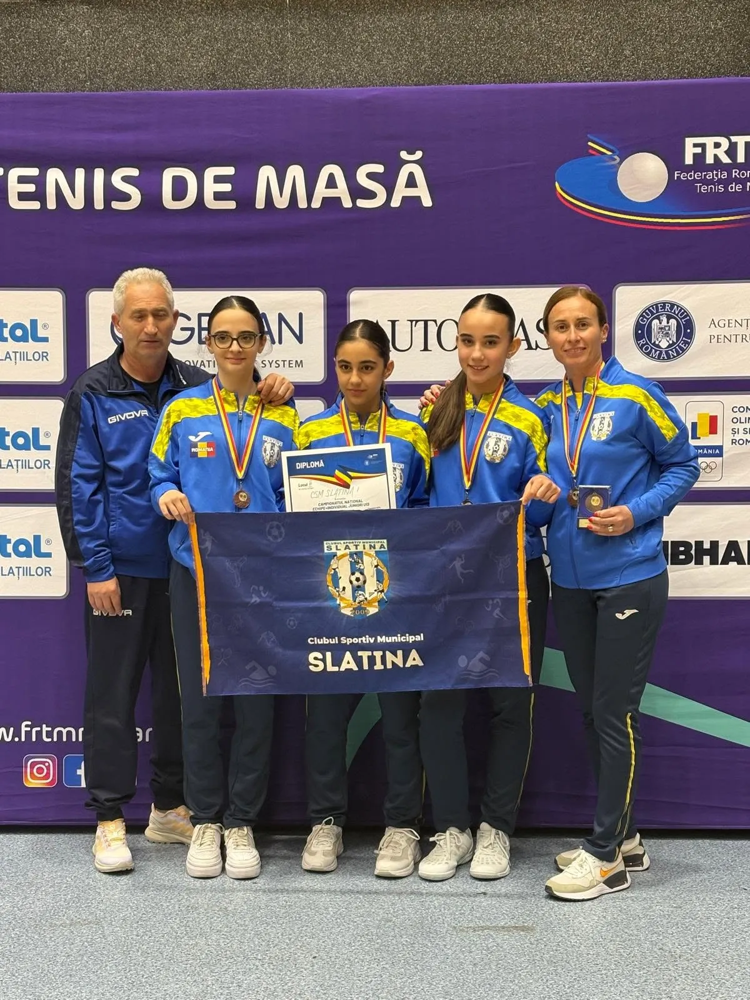
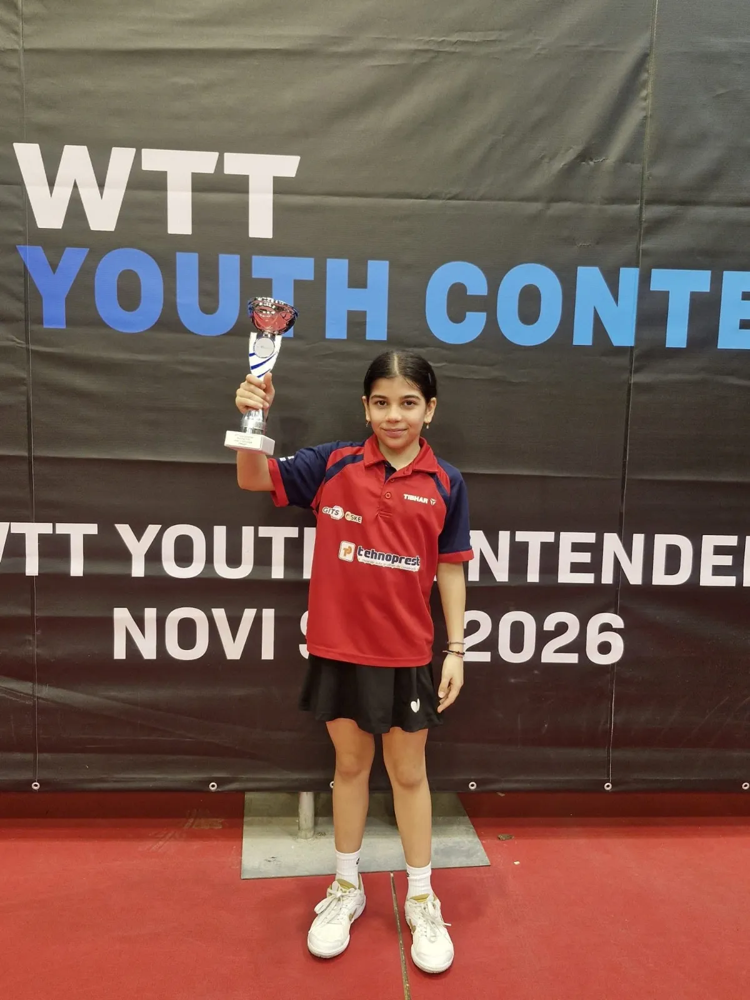

Tenis de masă
Reflexe fulgerătoare și precizie milimetrică — școala de tenis de masă a Slatinei.
Despre secție
Tenis de masă la CSM Slatina
Tenisul de masă este sportul în care Slatina a crescut campioni naționali de juniori. În sala dedicată a clubului, paletele nu se opresc niciodată: grupe de copii, juniori și seniori se antrenează zilnic.
Sportul perfect pentru dezvoltarea vitezei de reacție, a concentrării și a gândirii tactice. Copiii pot începe de la 6 ani, iar cei mai buni ajung rapid pe podiumurile competițiilor naționale.
Vino la un antrenament →Unde ne antrenăm
Sala de tenis de masă CSM Slatina
Program antrenamente
Programul grupelor este stabilit la începutul fiecărui sezon. Contactează secția pentru orarul curent.
Înscrieri
Telefon: 0349 738 657
E-mail: csmslatina@yahoo.com
Galerie
Secția în imagini






